11.调试窗口
点击软件工具栏中的调试将进入调试窗口
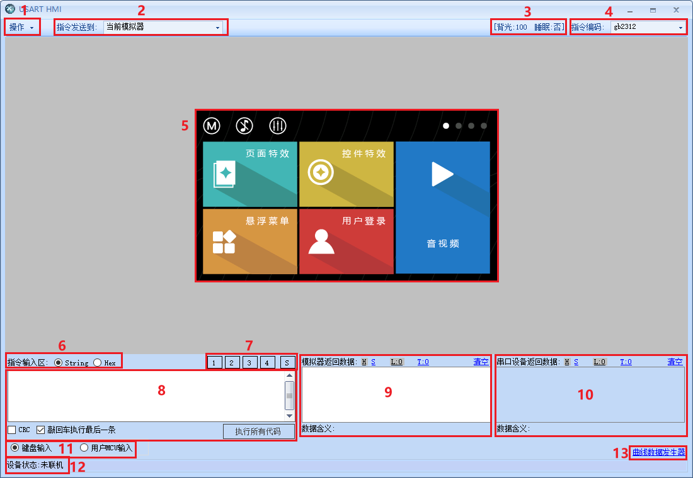11.1操作菜单
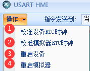- 11.1.1校准设备RTC时钟
对电脑正在联机的屏幕中rtc时钟进行校准。（仅k0，x5支持rtc）
注意
使用到屏幕中rtc必须装电池，否则重新上电rtc值为随机值。电池型号为cr1220 3v。
- 11.1.2校准模拟器rtc时钟
对模拟器中rtc时钟进行校准。
- 11.1.3重启设备
重新启动和电脑联机的屏幕。
- 11.1.4重启模拟器
重新启动模拟器。
11.2与串口屏联机进行调试
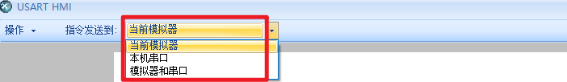软件支持3种调试方式
11.2.1当前模拟器
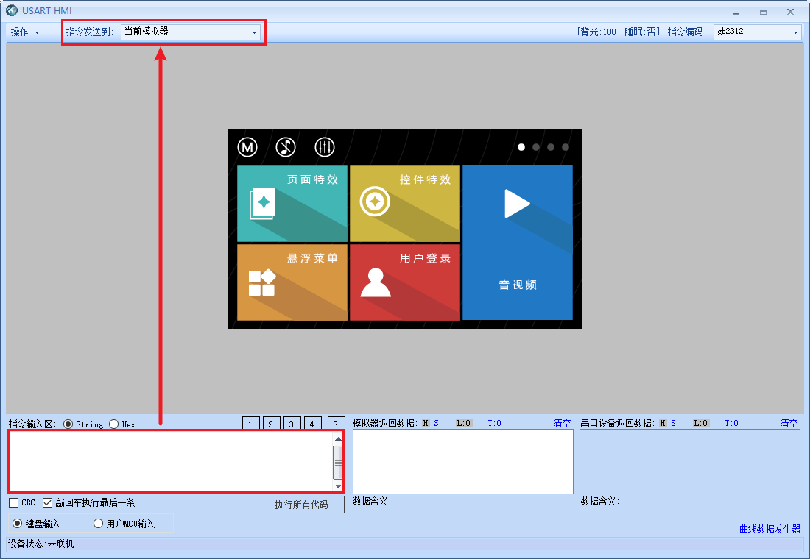将软件做好的工程在调试界面进行模拟仿真。选择当前模拟器，指令输入区输入指令控制的是模拟器。
11.2.2本机串口
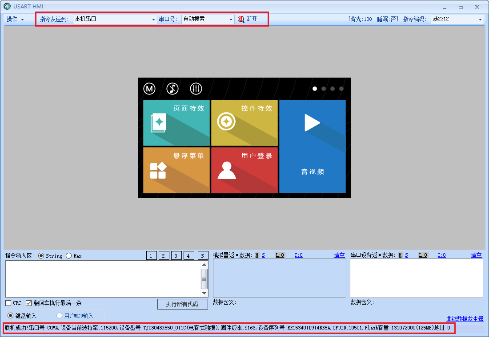将软件做好的工程在调试界面进行模拟仿真。选择本机串口，点击联机按钮，联机成功后，设备状态会出现联机设备型号等设备信息，调试输入区输入指令控制的是设备。
11.2.3模拟器和串口
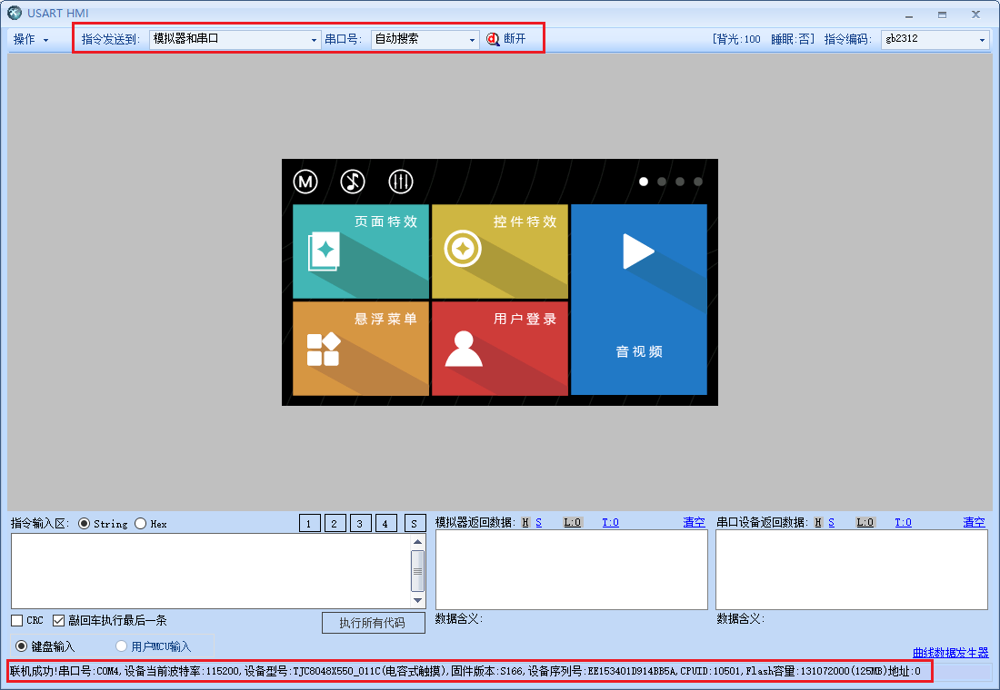将软件做好的工程在调试界面进行模拟仿真。选择模拟器和串口，点击联机按钮，联机成功后，设备状态会出现联机设备型号等设备信息，调试输入区输入指令控制的是设备和模拟器。能调试看到模拟效果和实际仿真，方便查找问题。
11.3模拟器状态
显示模拟器当前背光亮度，可通过dim，dims指令修改。屏幕是否处于睡眠中，通过sleep指令直接修改，ussp指令，thsp指令间接修改。
11.4指令编码
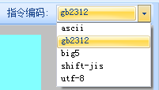指令输入区发送指令是用什么字符编码发送的。
注意
字符编码不一致时会出现乱码
11.5模拟器显示区域
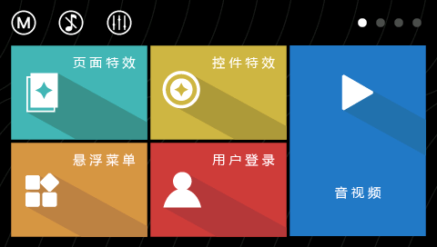模拟工程运行，运行显示界面，鼠标可以模拟触摸。鼠标左键点击触发按下事件，松开左键触发弹起事件。
11.6指令发送格式
- 11.6.1.string
选择string发送，指令以字符串形式发送。输入指令后将会默认在后面加上3个16进制ff。
- 11.6.2.hex
选择hex发送，指令以16进制形式发送。
11.7指令存储
点击1,2,3,4按钮指令输入区将出现保存在里面指令代码。点S是将指令输入区中指令代码保存到1到4按钮中。方便重复的指令调试。
11.8指令输入区
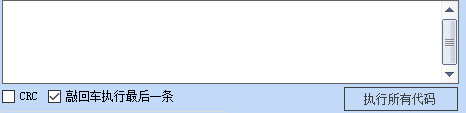在区域里输入指令，通过执行所有指令按钮，指令成功执行，模拟器显示区域（或串口设备）将会执行相应的操作。
- 11.8.1.crc
发送的字符串指令将主动加上crc校验再发送到模拟器（或串口设备）。默认关闭。
- 11.8.2.敲回车执行最后一条
开启后，敲键盘回车能够执行指令输入区的代码；关闭后，敲键盘回车不能够执行指令输入区的代码。默认开启。
注意
开启或关闭，都需要重新鼠标点击指令输入区；否则不生效。
11.9模拟器返回数据窗口
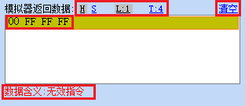当模拟界面工程串口发送数据出去的时候，串口发送的数据就会显示在这个窗口。
指令执行失败，将会在模拟器返回数据窗口返回失败原因（可通过bkcmd指令开启或关闭）。
- 11.9.1 H 显示
发送数据以16进制显示
- 11.9.2 S 显示
发送数据以字符串显示
- 11.9.3 L 显示
串口发送数据以行的形式显示。同一个控件同一个事件下串口发送的数据算一行。
- 11.9.4 T 显示
串口发送数据以发送数据先后显示，不分行。并以16进制数据显示。
- 11.9.5 清空
清空模拟器返回数据窗口里的所有数据
- 11.9.6串口设备返回数据窗口
当串口设备串口发送数据到模拟器，模拟器会将接收到的数据显示在这个窗口。
- 11.10.1 H 显示
模拟器接收到数据以16进制显示
- 11.10.2 S 显示
模拟器接收到数据以字符串显示
- 11.10.3 L 显示
模拟器接收到数据数据以行的形式显示。同一个控件同一个事件下串口屏发送的数据算一行。mcu每条指令加上3个16进制结束符算一行。
- 11.10.4 T 显示
模拟器接收到数据数据以接收数据先后显示，不分行。并以16进制数据显示。
11.11模拟器和mcu单片机联机调试
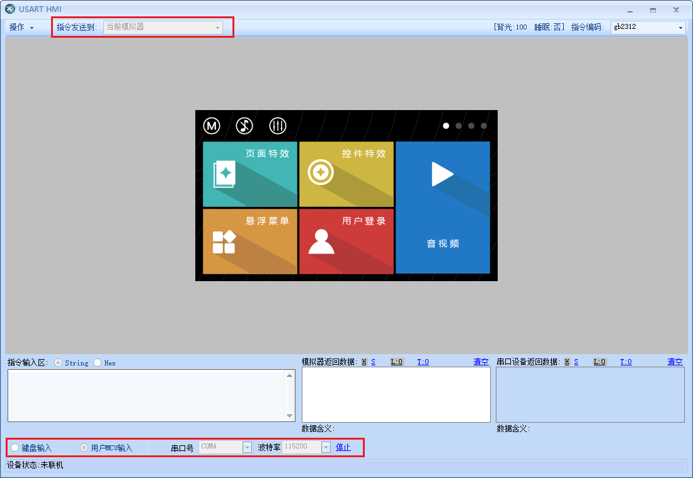- 将软件做好的工程在调试界面进行模拟仿真。
①指令发送到选择当前模拟器 ②下面选择用户mcu输入 ③选择好串口号，波特率，点击开始。 联机成功后，就可以mcu和模拟器进行调试。
11.12设备状态
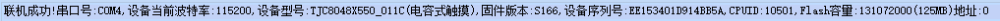指令发送到选择本机串口（模拟器和串口），开始联机，联机成功后会出现如上图所示的内容。
11.13曲线数据发生器
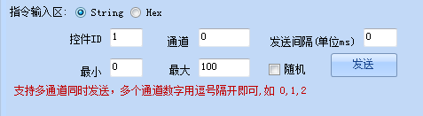仿真曲线/波形控件每添加一个点会形成的波形，方便用户调试出自己想要波形图。获取它的数据点以及时间间隔。